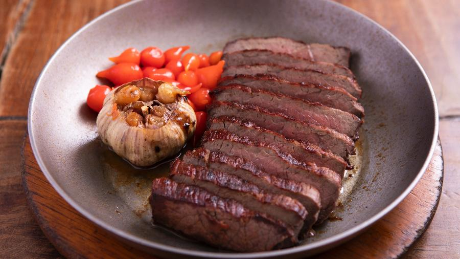

Sugestões de pratos salgados:

Quibebe
Purê de abóbora com arroz e carne de sol.


Feijão Verde
Feijão verde cozido com carne de sol.
Escondidinho
Carne de sol desfiada com purê de mandioca.
Bobó de Camarão
Camarão cozido com purê de mandioca.

Sarapatel
Prato com vísceras de porco e temperos.
Carne de Sol na Brasa
Carne de sol assada na brasa.